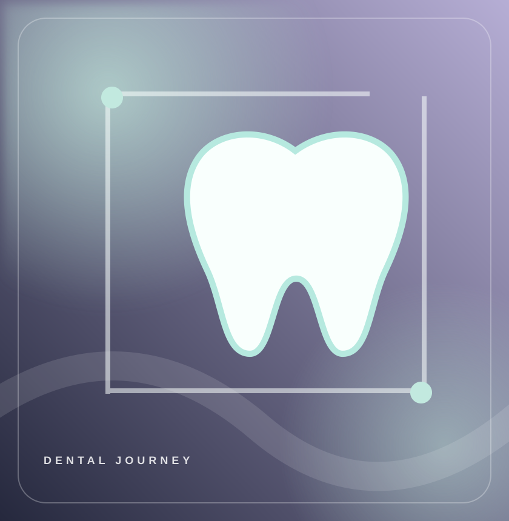

01 — LISTEN
ابتدا، شنیدن.
از دغدغهها و هدفتان میگویید. سؤالها در فضایی آرام مطرح میشوند تا برای گام بعدی دید روشنتری داشته باشید.
گفتوگو و دریافت شرح حالمراقبت خوب با شنیدن شروع میشود. از بررسی سلامت دهان و دندان تا انتخاب درمانهای زیبایی و ترمیمی، تلاش میکنیم مسیر تصمیمگیری برای شما روشن، قابلفهم و آرام باشد.

از درمانهای پیشگیرانه تا بازسازی عملکرد و زیبایی لبخند؛ با خدمات آشنا شوید و برای انتخاب مسیر مناسب با پزشک مشورت کنید.
کمک برای انتخاب خدمت
در نُوا، هدف ما معرفی روشن گزینههای درمان و ساختن تجربهای راحتتر برای مراجعهکننده است. از اولین گفتوگو تا مراقبتهای پس از درمان، توضیح دقیق مراحل و پاسخ به سؤالهای شما بخش مهمی از این مسیر است. انتخاب هر روش درمانی بر پایه معاینه و شرایط فردی انجام میشود.
از دغدغهها و هدفتان میگویید. سؤالها در فضایی آرام مطرح میشوند تا برای گام بعدی دید روشنتری داشته باشید.
گفتوگو و دریافت شرح حالدندانپزشک وضعیت دهان و دندان را ارزیابی میکند و در صورت ضرورت، بررسیهای تکمیلی را پیشنهاد میدهد.
معاینه و بررسی نیازهابا در نظر گرفتن گزینهها، مدت درمان، مراقبتها و هزینههای احتمالی، درباره مسیر مناسب تصمیم میگیرید.
توضیح طرح درمانبعد از درمان نیز آگاهی از بهداشت، مراقبتهای لازم و زمان مناسب پیگیری اهمیت دارد.
مراقبت و ارزیابی دورهاینمونهکارها را بر اساس نوع درمان ببینید. تصاویر این نسخه صرفاً برای نمایش چیدمان هستند؛ نسخه نهایی با رضایت بیماران و تصاویر واقعی منتشر میشود.
دریافت مشاوره
تجربه افراد میتواند به شناخت فضای مجموعه کمک کند، اما نتیجه درمان برای هر شخص متفاوت است. ویدئوهای زیر نمونه رسانهایِ ارائهشده برای طراحیاند.
کارتهای زیر نمونه چیدمان نظرات متنیاند، نه اظهارنظر تأییدشده بیمار. با قرار دادن بازخوردهای واقعی، این بخش به شکلی پویا نمایش داده میشود.
«پس از دریافت توضیح کامل درباره گزینههای درمان، انتخاب مسیر برایم واضحتر شد.»
«دوست داشتم قبل از مراجعه، درباره روند درمان و مراقبتهای بعد از آن بدانم.»
«دیدن فضای کلینیک و آشنایی با اعضای تیم پیش از مراجعه، تصمیمگیری را سادهتر میکند.»
«برای من مهم است پزشک درباره مزایا، محدودیتها و گزینههای دیگر هم صحبت کند.»
«امکان پرسیدن سؤالها پیش از تعیین نوبت، نگرانیهای اولیه را کمتر میکند.»
پیش از مراجعه با پزشکان، حوزه فعالیت و رویکرد حرفهای آنها آشنا شوید. مشخصات و تصاویر زیر نمونه جایگذاریاند و ادعای همکاری افراد نمایشدادهشده با کلینیک نیستند.
 پروفایل نمایشی
پروفایل نمایشی[عنوان تخصصی مطابق مدرک] — سوابق و حوزه فعالیت پس از تأیید اطلاعات درج میشود.
درخواست نوبتپروفایل نمایشی[عنوان تخصصی مطابق مدرک] — اطلاعات درمانهای تحت پوشش و برنامه حضور.
درخواست نوبتپروفایل نمایشی[عنوان تخصصی مطابق مدرک] — معرفی آموزش، تجربه و حوزه فعالیت واقعی.
درخواست نوبتآموزشهای کاربردی برای مراقبت روزانه و شناخت بهتر درمانها؛ مطالعه مطالب جایگزین معاینه و تشخیص نیست.
 مراقبت روزانه
مراقبت روزانهآشنایی با اهمیت بررسی دورهای، علائم هشدار و مراقبت پیشگیرانه.
پیشنمایش مقالهدرمان زیباییمقایسه کلی روشها و اهمیت ارزیابی سلامت دهان پیش از درمان زیبایی.
پیشنمایش مقالهراهنمای درماننگاهی به گزینههای جایگزینی دندان و عواملی که انتخاب درمان را شکل میدهند.
پیشنمایش مقالهپیوندهای مقالات در این نسخه تکصفحهای به بخش پرسشها منتقل میشوند؛ محتوای کامل مقالات در فاز بعدی ساخته میشود.
این بخش تاشو مخصوص توضیح دقیق روند کار کلینیک است؛ روی هر مرحله بزنید تا توضیحات و آنچه باید بدانید نمایش داده شود.
شروع درخواست نوبت
در هر مرحله، موضوعها و اقدام بعدی به زبان ساده توضیح داده میشوند.
نوع خدمت مدنظرتان را انتخاب میکنید و اطلاعات تماس را وارد میکنید. پس از اتصال فرم به سامانه نوبتدهی کلینیک، تیم پذیرش میتواند برای هماهنگی زمان با شما ارتباط بگیرد. ثبت فرم به معنی تأیید قطعی نوبت نیست.
رفتن به فرم درخواست نوبتدندانپزشک وضعیت دهان، دندان و لثه را بررسی میکند و در صورت نیاز معاینات یا تصویربرداری تکمیلی را پیشنهاد میدهد. شرایط و محدودیتهای هر فرد در انتخاب درمان اهمیت دارد.
پس از ارزیابی، گزینههای احتمالی، زمانبندی، هزینه تقریبی و مراقبتهای لازم متناسب با شرایط شما توضیح داده میشوند. انتخاب درمان با درنظرگرفتن نظر تخصصی پزشک و رضایت آگاهانه انجام میشود.
مراحل درمان براساس طرح اختصاصی شما انجام میشود. پیش از شروع، پرسشها و نگرانیها مطرح میشوند و پس از انجام کار، دستورهای مراقبتی متناسب با نوع درمان ارائه میگردد.
زمان و نوع پیگیری بر اساس درمان و نظر دندانپزشک تعیین میشود. آموزش بهداشت دهان و مراقبت در خانه بخشی از حفظ نتیجه درمان است.
دانستن چند نکته ساده درباره روند معاینه، انتخاب درمان و مراقبتهای بعد از آن به برنامهریزی بهتر کمک میکند. این پاسخها کلیاند و جایگزین معاینه پزشک نیستند.
سؤالی دارید؟فرم سهمرحلهای برای انتخاب خدمت، زمان پیشنهادی و ثبت اطلاعات تماس؛ ساده، شفاف و قابل استفاده با موبایل.
در این پیشنمایش، نوبتی ثبت یا تأیید نشده است. میتوانید متن را کپی یا به صورت فایل دانلود کنید.
برای دریافت و ثبت نوبت واقعی، اتصال به سرویس پذیرش یا بکاند کلینیک ضروری است.